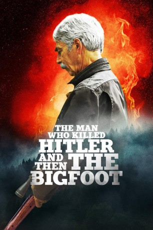

#11280 The Man Who Killed Hitler and Then the Bigfoot
 
 IMDB-Wertung: 5.6 / 10
IMDB-Wertung: 5.6 / 10  Metascore: 51
Metascore: 51 
Während des Zweiten Weltkriegs bekommt der amerikanische Soldat Calvin Barr (Aidan Turner) einen Spezialauftrag: Er soll Adolf Hitler töten. Er verlässt Maxine (Caitlin Fitzgerald), die große Liebe seines Lebens, um sich tief hinter feindlichen Linien auf eine gefährliche Spezialmission zu begeben und danach unter neuer Identität weiter zu leben. Aufgrund seiner Mission damals taucht eines Tages ein Regierungsagent (Ron Livingston) bei Barr (hier gespielt von Sam Elliott) auf. Der Veteran soll ein neues Monster töten. Der sagenumwobene Bigfoot treibt sein Unwesen in der kanadischen Wildnis.
Jahr: 2018
Dauer: 97 Minuten
FSK: 16
Land: USA Studio: RLJ EntertainmentTonspuren: DTS - ,
Untertitel: Deutsch,
Auflösung: 1080p (1920x800) Größe: 7925 MB
Genre: Drama, Sci-Fi, Abenteuer, Krieg
Regisseur: Robert D. Krzykowski
Drehbuch: Robert D. Krzykowski
Soundtrack: Joe Kraemer
Darsteller:
 Sam Elliott als Calvin Barr
Sam Elliott als Calvin Barr Aidan Turner als Calvin Barr
Aidan Turner als Calvin Barr Ron Livingston als Flag Pin
Ron Livingston als Flag Pin Caitlin FitzGerald als Maxine
Caitlin FitzGerald als Maxine Larry Miller als Ed
Larry Miller als Ed- Dennis Maler als 1940's Dancer
 Sean Bridgers als
Sean Bridgers als  Ellar Coltrane als
Ellar Coltrane als  Rizwan Manji als
Rizwan Manji als - Anastasia Tsikhanava als
 Mark Steger als
Mark Steger als - Silas Archer Gustav als
- Kelley Curran als
- Kristen Anne Ferraro als
- Nikolai Tsankov als
- Alton Fitzgerald White als
 Alan Francis als
Alan Francis als - Rob Lévesque als
 Mickey Gilmore als
Mickey Gilmore als - Mark Lund als
- Melissa Jalali als
- Robert Marsella als
- Rocco Gioffre als
- David Armstrong als
- Leslie Trentalange als
- Harold Rudolph als
- Dianne Bischoff als
 Rosemary Howard als
Rosemary Howard als  Richard Pacheco als
Richard Pacheco als - Julian Lowenthal als
- Lara Pezza als
- Daniel B. Martin als
- John C. Quinlan als
- Steve Provizer als
- Lisa Degerdon als
- Sally Nutt als
- Christina Calvao als
- Roger Curley als
- Terry Holland als
- Andrew Sadowski als
- Scott Sederquist als
- Hailey Thomas als
- Robert Nunnelly als
Datei: X:\2018(G-M)\Man Who Killed Hitler and Then the Bigfoot, The (2018, FSK16, 1920x800).mkv seit 17.06.2019
Festplatte: HD 2018(G-Z)-2019(A-Z)
 Es gibt insgesamt 138 Filme in der Gruppe '2018(G-M)'
Es gibt insgesamt 138 Filme in der Gruppe '2018(G-M)'